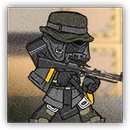
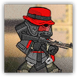

游击队狙击手 Guerrilla Sniper
远程 物理；普通 任意
|  |
游击队的普通狙击手。拥有专业的军事化射击技巧，收到战术命令后状态会得到提升，将能够同时攻击两个目标。 |
游击队狙击手丨Guerrilla Sniper
中型类人（任意），守序中立
| AC 15 | 先攻 +3（13） |
| HP 32（5d8+10） | |
| 速度 30 尺 | |
| 调整 | 豁免 | 调整 | 豁免 | 调整 | 豁免 | |||||||||
|---|---|---|---|---|---|---|---|---|---|---|---|---|---|---|
| 力量 | 14 | +2 | +2 | 敏捷 | 18 | +4 | +6 | 体质 | 15 | +2 | +2 | |||
| 智力 | 11 | +0 | +0 | 感知 | 14 | +2 | +4 | 魅力 | 12 | +1 | +1 |
| 技能 特技+5，隐匿+5，察觉+4 |
| 抗性 寒冷 |
| 装备 重弩，布甲 |
| 感官 黑暗视觉60尺，被动察觉14 |
| 语言 通用语，乌萨斯语 |
| CR 2（450 XP；PB +2） |
动作 Actions
多重攻击 Multiattack（仅限具有临时生命值时）。游击队狙击手使用重弩或弩柄敲击发动共计两次攻击。
重弩 Heavy Crossbow。远程攻击检定：+6，射程 100/400 尺。命中：9（1d10+4）穿刺伤害。
弩柄敲击 Buttstroke。近战攻击检定：+4，触及5尺。命中：6（1d8+2）钝击伤害。
游击队狙击手组长 Guerrilla Sniper Leader
近战 物理；普通 任意
|  |
游击队的高级狙击手。拥有非常专业的军事化射击技巧，收到战术命令后状态会得到提升，将能够同时攻击两个目标。 |
游击队狙击手组长丨Guerrilla Sniper Leader
中型类人（任意），守序中立
| AC 15 | 先攻 +3（13） |
| HP 52（7d8+21） | |
| 速度 30 尺 | |
| 调整 | 豁免 | 调整 | 豁免 | 调整 | 豁免 | |||||||||
|---|---|---|---|---|---|---|---|---|---|---|---|---|---|---|
| 力量 | 14 | +2 | +2 | 敏捷 | 18 | +4 | +6 | 体质 | 16 | +3 | +5 | |||
| 智力 | 13 | +1 | +1 | 感知 | 15 | +2 | +4 | 魅力 | 14 | +2 | +2 |
| 技能 特技+5，隐匿+5，察觉+4 |
| 抗性 寒冷 |
| 装备 重弩，布甲 |
| 感官 黑暗视觉60尺，被动察觉14 |
| 语言 通用语，乌萨斯语 |
| CR 4（700 XP；PB +2） |
动作 Actions
多重攻击 Multiattack（仅限具有临时生命值时）。游击队狙击手使用重弩或弩柄敲击发动共计两次攻击。
重弩 Heavy Crossbow。远程攻击检定：+6，射程 100/400 尺。命中：9（1d10+4）穿刺伤害。
弩柄敲击 Buttstroke。近战攻击检定：+4，触及5尺。命中：6（1d8+2）钝击伤害。
附赠动作 Bonus Actions
瞄准 Aim。游击队狙击手组长使得本回合下次进行的重弩攻击获得以下效应：这次攻击具有优势，并在命中时额外造成11（2d10）穿刺伤害。